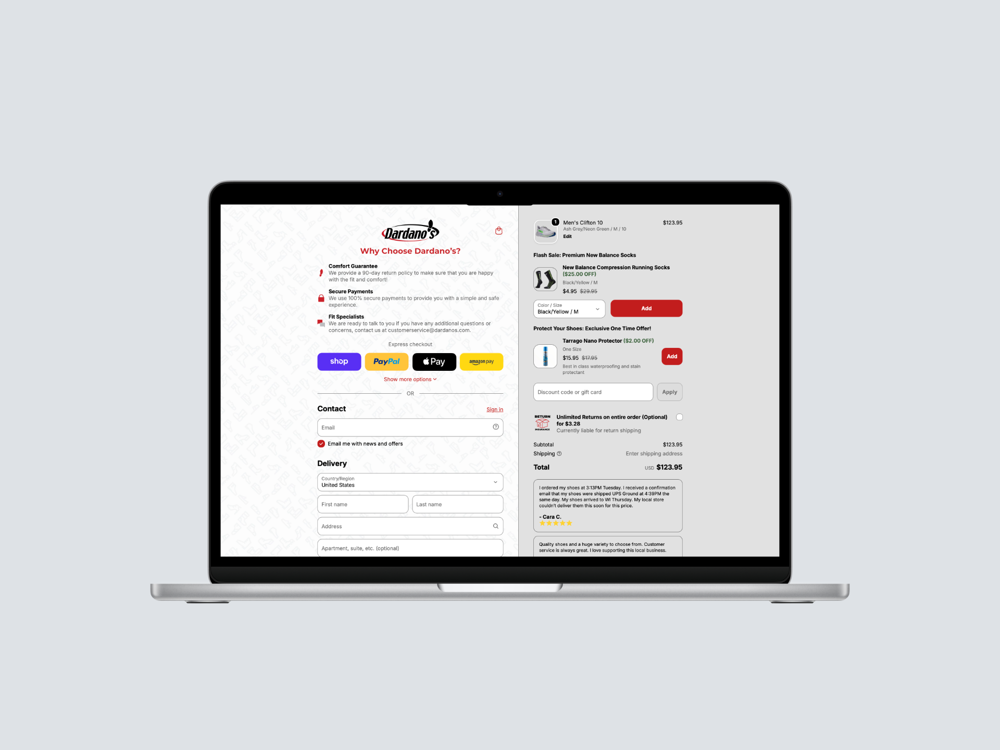
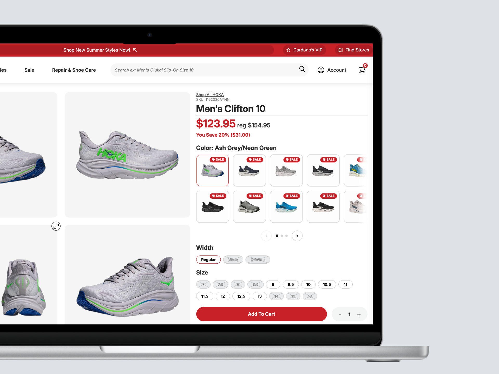
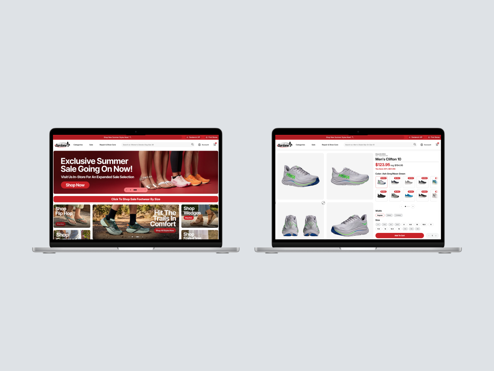

Dardano's Shoes
An e-commerce redesign that pivoted an 85-year-old family shoe store to digital: $106K in online profit in six months.

Design as a survival strategy for a historic brand.
Founded in 1938, Dardano's is a beloved family owned shoe retailer in Denver, Colorado, known for quality footwear and a deeply personal in-store experience. When the pandemic erased their foot traffic, that reliance on physical retail became an existential risk.
I led a rapid, full scale redesign of Dardanos.com, turning a brochure style site that had never really sold anything into a real e-commerce business that captured the brand's warmth online and drove measurable revenue.
Increase in online orders in the first quarter, from a near zero baseline to a real revenue channel
In online profit within the first six months, validating the pivot from physical first to digital first retail
More pages per session: users explored the catalog instead of bouncing from the homepage
Same owner, two storefronts. Dardano's is where you buy your shoes. EZ Shoe Repair is where you get them fixed. I designed both ends of the journey.
An outdated site failing a premium brand.
The old Dardanos.com had outdated visuals, confusing navigation, and an information architecture that buried products. Customers who loved the store in person had no equivalent online, so e-commerce sales were negligible.
When the pandemic closed the physical store, that weakness became a crisis. The site did not just underperform; it actively undermined a brand that deserved better, at the exact moment it was the only channel left.
I'm willing to pay more for quality and personalized service, but the website needs to make it easy to find what I want quickly, and trust that the fit will be right.
Robert Diaz, loyal Dardano's customer, user research interviewWhat I owned.
I was the sole designer on the project, working directly with the Dardano's owners and partnering with one engineer through the build. I owned the entire design end to end: user research, information architecture, visual design and the UI system, and worked side by side with the engineer to ship it without losing fidelity.
This was not a hand-off-the-mockups engagement. I set the strategy, made the hard calls, and stayed in the build until it shipped. Two of those calls shaped the entire outcome.
Trust before polish
You cannot try shoes on online, so I prioritized trust builders, real reviews, honest sizing guides and a clear returns policy, over a flashier homepage. I bet that confidence, not decoration, was what converted browsers into buyers. The revenue proved the bet right.
A quick-find IA for a deep catalog
With hundreds of SKUs, findability was the whole game. Rather than polish the existing menus, I rebuilt the navigation around a quick-find model that cut the path to purchase from many clicks to a few, designed to work for a 28 to 65 age range, not just the tech fluent.
What shipped.



Design that saved a business.
From near zero to a real revenue channel
Before the redesign, dardanos.com barely sold anything. Within six months it generated $106K in online profit and roughly three times the orders, proving the brand had a digital audience waiting to be reached.
Users explored instead of bouncing
Session depth rose measurably after launch. The new navigation and filtering meant customers moved through the catalog with intent, finding products they would never have surfaced on the old site.
A family business survived the pandemic
This was not just a UX win. It was the difference between a business that adapted and one that did not. Dardano's came out of the pandemic with a functioning digital operation built to scale.